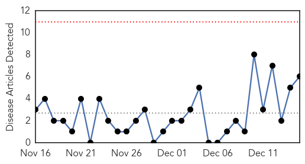
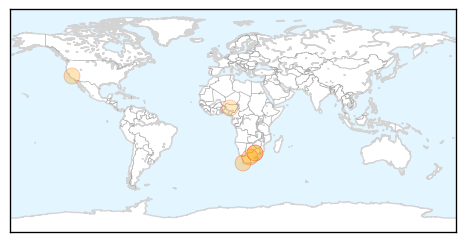
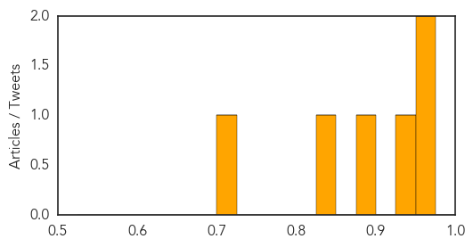
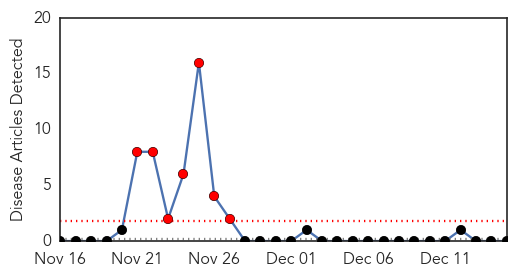
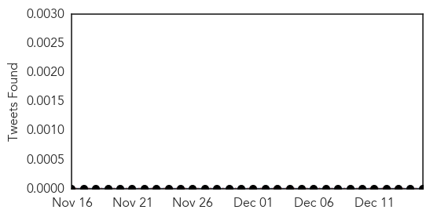

Measles
30-Day Web Trend
0 alerts, 0 warnings

30-Day Twitter Trend
0 alerts, 0 warnings

Article Locations
Article Confidences
Top Articles:
- 0.957
- High alert in South Africa for measles outbreak
- 0.956
- High alert in South Africa for measles outbreak
- 0.929
- SA sees rise in measles cases - Daily News
- 0.884
- 'No crisis' as measles outbreak hits seven provinces
- 0.847
- On the Front Lines of the Vaccine Debate, Pediatricians Play Both Sides
- 0.701
- This Video Shows 7 Years Of Preventable Disease Outbreaks Around The World
Top Tweets:
-
No tweets found for Dec 15, 2014
Bubonic Plague
30-Day Web Trend
7 alerts, 0 warnings

30-Day Twitter Trend
0 alerts, 0 warnings

Article Locations

Article Confidences

Top Articles:
-
No articles found for Dec 15, 2014
Top Tweets:
-
No tweets found for Dec 15, 2014